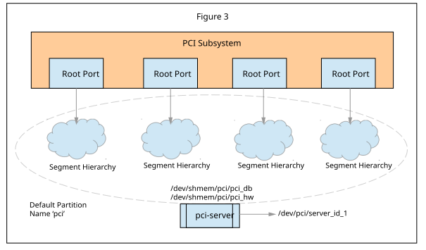

The PCI Routing Identifiers or BDF space used to represent each of the
components within a PCI system is global across all segments associated with a
partition. However, it is separate between the segments associated with
different partitions. Each partition provides for a separate BDF space.A PCI
Domain can consist of a single partition with all segments managed by a
single pci-server instance, a single partition with
segments managed by multiple pci-server instances or
multiple partitions each with their segments managed by one or more
pci-server instances.
Figure 2 shows the
operating environment and relationship between various PCI resources. It
shows the PCI components in a PCI subsystem with four separate root ports
within a single compute domain.
Figure 2. Operating environment and relationship between various PCI
resources
Although there is no explicit partition, all four segments are grouped
together and managed by a single
pci-server instance
which maintains information about the domain hierarchy in two files (i.e.,
/dev/shmem/pci/pci_db and
/dev/shmem/pci/pci_hw). The BDF space for this
hierarchy is global and consists of the following specification:
Along with this, the PCI subsystem enables explicit partitioning. You can
either choose a descriptive name for the partition or "pci" will be used as
the default name.
Figure 3 shows the same representative system as in
Figure 2 but with explicit partitioning.
Figure 3. Operating environment with explicit partitioning

In this example, although there is an explicit partition with
the default name "pci", all 4 segments are still grouped together and
managed by a single pci-server instance which maintains
information about the domain hierarchy in two files, this time with the
partition name included in their location in the namespace,
dev/shmem/pci/pci_db and /dev/shmem/pci/pci_hw/.
The BDF space for this hierarchy is also global and consists of the
same specification:
B[255..0]:D[31..0]:F[7..0]
Note: The namespace node registered by the
pci-server takes the partition into account in this
example. This is because the partition name or server identifier name is not
specified. The defaults names are "pci" and "server_id_1".